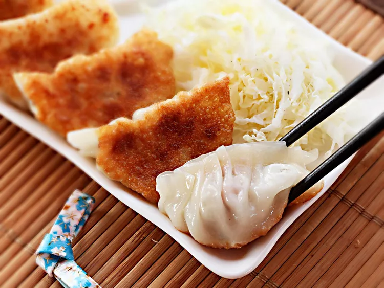

Gyoza

Description
Potstickers or gyoza, these amazing pork and cabbage dumplings will definitely satisfy you! (Recipe from Serious Eats)
Ingredients
- 1 lb fincely minced Napa cabbage
- 1 tbs kosher salt
- 1 lb ground pork shoulder
- 1 tsp white pepper
- 1 tbs minced fresh garlic
- 1 tsp minced fresh ginger
- 2 oz minced scallions (about 3)
- 2 tsp sugar
- 1 package dumpling wrappers
- Veg or canola oil
- 1/2 cup rice vinegar
- 1/4 cup soy sauce
- 2 tbs chili oil
Steps
- Combine cabbage and 2 tsp salt in a large bowl and toss to combine. Transfer toa fine mesh strainer and set over the bowl. Let stand at room temp for 15 minutes.
- Transfer cabbage to the center of a clean dish towel and gather up edges. Twist the towel to squeeze the cabbage, wringing out as much excess moisture as possible. Discard liquid.
- Combine pork, cabbage, remaining tsp salt, white pepper, garlic, ginger, scallions, and sugar in a large bowl and knead and turn with clean hands until mixture is homogenous and starts to feel tacky/sticky. Transfer a teaspoon-sized amount to a microwave-safe plate and microwave on high power until cooked through, about 10 seconds. Taste and adjust seasoning with more salt, white pepper, and/or sugar if desired.
- Set up a work station wuth a small bowl of water, a clean dish towel for wiping fingers, a bowl with dumpling filling, a parchment-lined rimmed baking sheet for finished dumplings, and a stack of dumpling wrappers covered in plastic wrap.
- To form dumplings, hold one wrapper on top of a flat hand. Using a spoon, place spread a 2 teaspoon to 1 tablesppon sized amount of filling in the center of the wrapper, in the shape of a disk. Use the top of the finger on your other hand to gently moisten the edge of the wrapper with water (do not use too much water). Wipe fingertip dry on kitchen towel.
- Working from one side, carefully seal filling inside wrapper by folding into a cresent shape, pleating in edge as it meets the other. Trasfer finished dumplings to parchment lined baking sheet.
- Heat 1 tbs of veg oil in a medium non-stick skillet over medium heat until shimmering. Add as many dumplings as will fit in a single layer and cook, swirling pan, until evenly golden brown on the bottom surface, about 1 1/2 minutes.
- Increase heat to medium-high, add 1/2 cup of water and cover tightly with a lid. Let dumplings steam for 3 minutes, then remove lid. Continue cooking, swirling pan frequently and using a thin spatula to gentlu dislodge the dumplings if they've stuck to the bottom of the pan, until the water has fully evaproated and dumplings have crisped again, about 2 minutes longer. Slide dumplings onto a plate, turning them crisped side-up before immediately serving with sauce.
- Combine vinegar, soy sauce, and chili oil. Serve.gyoz